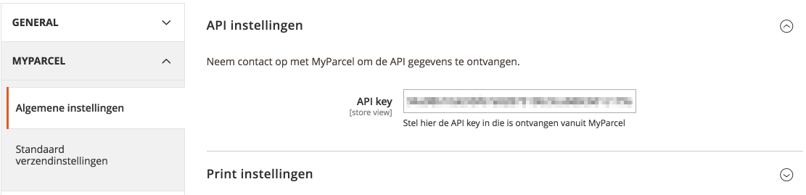
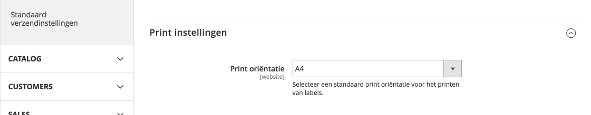
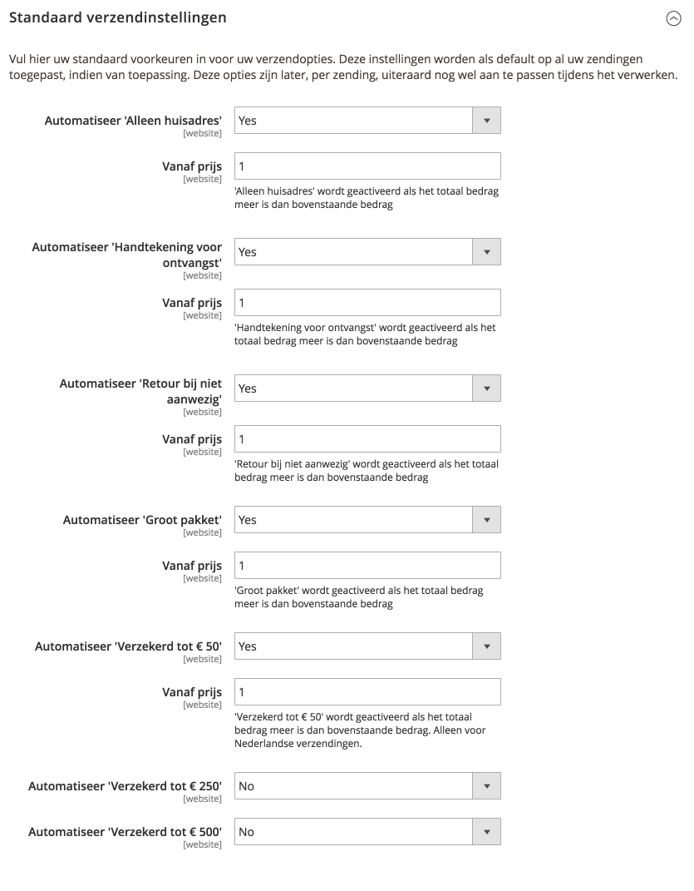
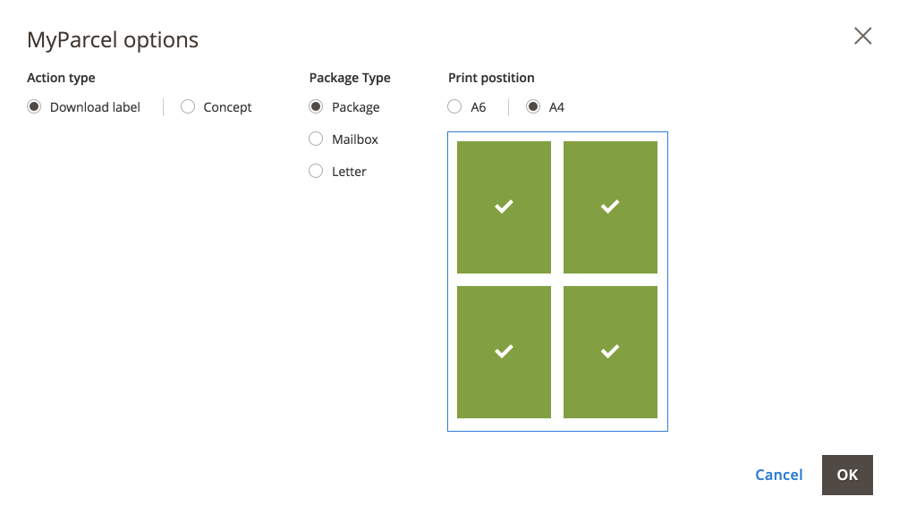
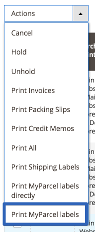
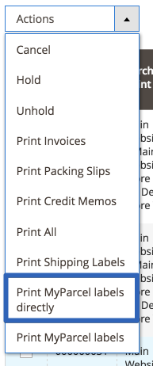
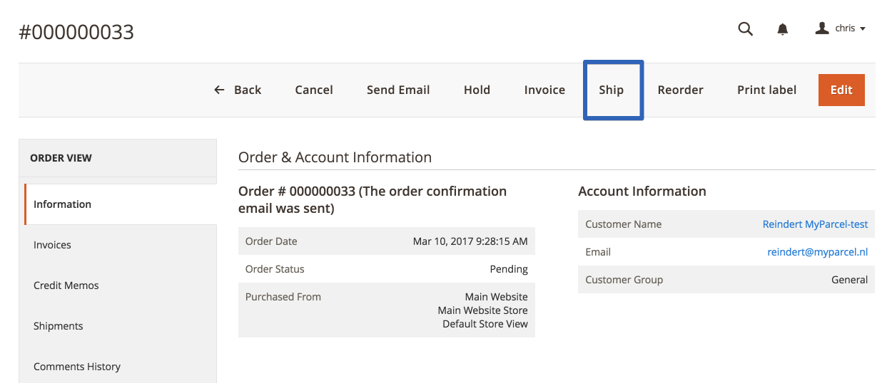
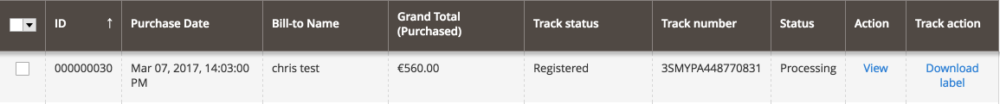
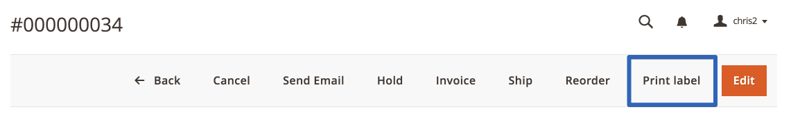
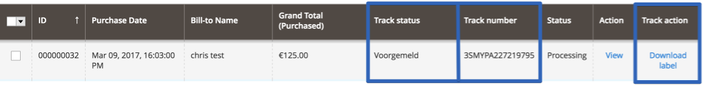

Inleiding
Deze handleiding beschrijft de functionaliteiten van de MyParcel extensie voor Magento 2.
Met deze Magento 2 extensie kun je vier soorten MyParcel zendingen aanmaken:
- Normaal (gewone Nederlandse pakketten)
- Pakketten naar buitenland, alleen EU.
- Brievenbuspakje
- Ongefrankeerd label
Inhoud
1 Technische vereisten
De MyParcel Magento 2 extensie is te downloaden via de Magento Extensions Store.
Deze is ook te verkrijgen via de terminal, raadpleeg jouw webbeheerder.
Jouw webbeheerder kan het volgende commando uitvoeren:
composer require myparcelnl/magento
1.1 Technische vereisten
Om de MyParcel Magento 2 extensie te gebruiken dient uw server aan de onderstaande vereisten te voldoen:
- Minimaal PHP versie 5.6
De onderstaande Magento versie wordt ondersteund:
Community 2.1
2 Configuratie
Ga naar het menu Stores → Configuration → MyParcel om de MyParcel extensie te
configureren.
Verder zie je 2 tabbladen om uit te kiezen. Op het tabblad 'Algemene instellingen' kun je je API key invoeren en jouw printvoorkeur instellen. Op het tabblad ' Standaard verzendinstellingen' kun je de default voorkeuren voor de MyParcel verzendopties aangeven.
2.1 Algemene instellingen
2.1.1 API key instellen
Hier kun je jouw API Key invullen. Deze zijn nodig om de zendingen door te kunnen zetten naar MyParcel. Deze gegevens kun je vinden in jouw MyParcel account op backoffice.myparcel.nl en ga vervolgens naar Instellingen -> Algemeen
2.1.2 Print oriëntatie
Kies de Print oriëntatie. Als je kiest voor A4 formaat zullen vier verzendlabels per A4 vel geprint
worden. Als je kiest voor A6 formaat zijn de verzendlabels geschikt voor het printen met een speciale
labelprinter zoals een Zebra of Dymo 4XL.

2.2 Standaard verzendinstellingen
Bij Standaard verzendinstellingen kun je configureren hoe je wil dat jouw zending standaard verwerkt worden wanneer je de MyParcel extensie voor Magento 2 gebruikt. 
2.2.1 Standaard verzendopties
Op basis van de ingevulde orderwaarde worden de onderstaande opties geactiveerd. Voorbeeld: Indien je bij Verzekerd tot € 250 bijvoorbeeld de waarde 100 invult, worden orders met een verkoopwaarde boven de € 100 automatisch verzekerd tot een waarde van € 250. Deze logica is voor alle onderstaande opties in te stellen:
- Alleen huisadres
- Handtekening bij ontvangst
- Retour bij niet aanwezig
- Groot pakket
- Verzekerd tot € 50
- Verzekerd tot € 250
- Verzekerd tot € 500
Let op: Op het moment dat No ingevuld staat, is de optie niet geactiveerd. Bij invullen van Yes staat de optie actief. Wanneer er bij 'Vanaf prijs' een 0 wordt ingevuld zal de optie ook actief zijn.
3 Backend functionaliteiten
Om de backend functionaliteiten te kunnen gebruiken moet de MyParcel Magento 2 extensie ingeschakeld zijn.
3.1 Verzending aanmaken
Een MyParcel zending aanmaken kan op twee manieren:
1. Batch methode in het bestellingenoverzicht.
- Selecteer de orders die je wilt exporteren naar MyParcel.
- Kies in de actie balk Print MyParcel labels
- Kies voor de juiste printpositie, indien je voor A4 hebt gekozen. 
- Het PDF verschijnt op je computer en is klaar om te printen.
- Wanneer je de instellingen in stap 3 wil overslaan, bijvoorbeeld omdat je via de ‘standaard verzendinstellingen’ al de juiste verzendopties aan jouw bestellingen hebt meegegeven, dan kan je via ‘Print MyParcel labels direct’ je labels direct downloaden.



2. Per bestelling als je een Magento zending aanmaakt.
- Klik op de desbetreffende order.
- Kies rechtsboven voor de knop ship. 
- Rechts onderin verschijnt een vak. Hier kan je zowel het verzendtype aanpassen als de beschikbare verzendopties per verzendtype.
- Verstuur zending naar MyParcel via 'Submit Shipment'.
- Vervolgens kun je meteen het label printen in de order door rechtsboven op de knop 'Print label' te klikken.



3.2 Orderoverzicht
Om je altijd inzicht te bieden in de status van jouw zendingen zijn er 3 nieuwe kolommen automatisch toegevoegd aan het orderoverzicht nadat de MyParcel plugin is geïnstalleerd.
- Track status : Hier kun je de status van de zending zien, deze wordt altijd up to date gehouden.
- Track number : Hier vind je de barcode van je zending.
- Track action : Wanneer de order nog niet verzonden is en je klikt op 'Select', dan verschijnt er een pop-up met download opties voor verzendlabels. Mocht je order al verzonden zijn, dan kan je hier het label nogmaals downloaden.